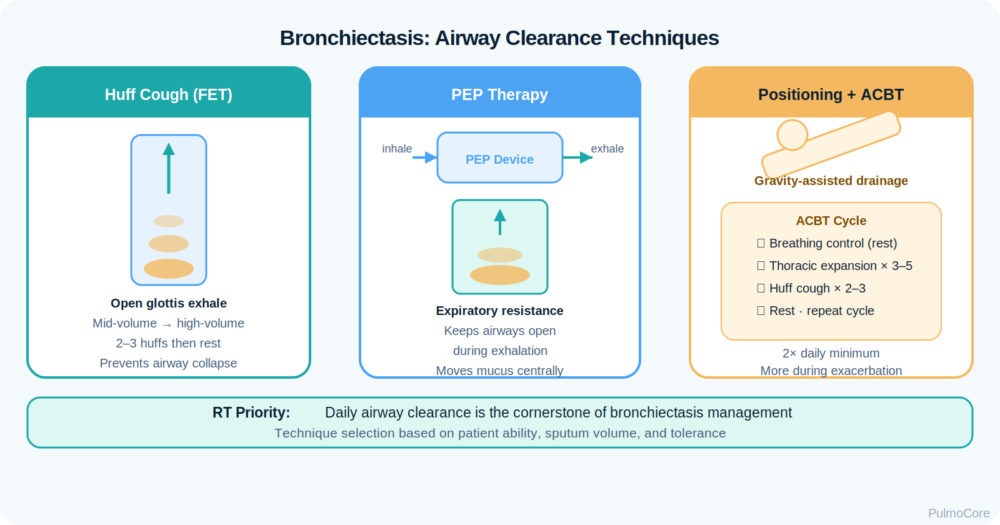
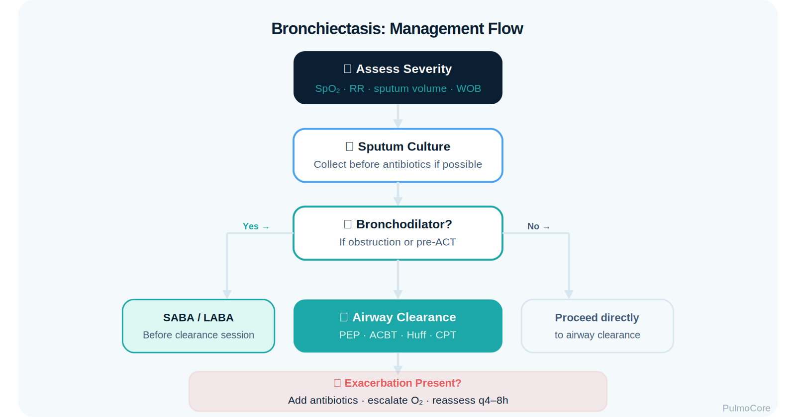

Bronchiectasis is a chronic suppurative airway disease marked by permanent abnormal bronchial dilation, impaired mucociliary clearance, mucus retention, recurrent infection, and progressive airway inflammation. This module focuses on RT-level recognition, airway clearance, sputum assessment, oxygenation, diagnostics, exacerbation management, and escalation when secretion burden or infection threatens ventilation.
Category Chronic Suppurative Airway Disease
Estimated Time 30–40 minutes
Level Core RT Knowledge
Learning Objectives
By the end of this bronchiectasis module, learners should be able to connect airway dilation, mucus retention, chronic infection, inflammation, clinical findings, diagnostic data, airway clearance, antibiotics, and escalation priorities.
1. Explain pathophysiology Describe how damaged dilated bronchi impair mucus clearance and create a cycle of infection, inflammation, and airway injury.
2. Interpret assessment findings Use chronic productive cough, sputum quality, crackles, hypoxemia, hemoptysis risk, and exacerbation symptoms to guide RT priorities.
3. Connect diagnostics to decisions Relate HRCT findings, sputum culture, PFT patterns, ABGs, pulse oximetry, and CXR changes to management choices.
4. Escalate appropriately Recognize danger signs such as massive hemoptysis, sepsis, worsening hypoxemia, respiratory failure, or inability to clear secretions.
Video Overview
2-Minute Bronchiectasis Overview
Watch this quick overview before moving into the disease snapshot.
Disease Snapshot
Bronchiectasis is not just “a lot of mucus.” It is structural airway damage. The bronchi become widened and distorted, so mucus pools instead of clearing normally. Retained mucus promotes bacterial growth, which drives more inflammation and further airway damage.
What it is: Permanent abnormal dilation of bronchi with impaired mucus clearance.
Primary problem: Mucus retention, chronic infection, inflammation, and recurrent exacerbations.
Key diagnostic clue: HRCT showing bronchial dilation, lack of normal tapering, or airway larger than adjacent artery.
Acute danger: Massive hemoptysis, sepsis, worsening hypoxemia, or ventilatory failure.
RT priority: Airway clearance, sputum assessment, oxygenation, ventilation monitoring, and escalation when clearance fails.
RT Clinical Connection
For RTs, bronchiectasis management centers on secretion clearance and clinical trend recognition. The RT must determine whether the patient can mobilize secretions, whether oxygenation is deteriorating, whether infection is worsening, and whether therapy needs escalation.
Board Prep Frame
Immediately associate bronchiectasis with chronic purulent sputum, recurrent infections, coarse crackles/rhonchi, HRCT diagnosis, airway clearance therapy, sputum cultures, antibiotics for exacerbations, and hemoptysis as a major danger sign.
Quick Pre-Check
Start with the core bronchiectasis pattern
Which statement best describes the core airway problem in bronchiectasis?
Anatomy & Pathophysiology
Bronchiectasis begins when airway injury disrupts normal mucociliary clearance. Dilated bronchi lose the normal tapering shape that helps move secretions outward. Mucus stagnates, bacteria persist, inflammation increases, and the airway wall becomes more damaged.
Airways become widened, distorted, and less efficient at clearing mucus.
Secretions pool in dependent or damaged segments.
Loss of tapering
Airways fail to narrow normally toward the periphery.
High-yield HRCT clue for bronchiectasis.
Mucus retention
Secretions become chronic and may become purulent during infection.
Creates obstruction, cough, crackles, and infection risk.
Chronic infection
Organisms may persist in abnormal airways.
Drives exacerbations and antibiotic decisions.
Inflammation
Neutrophilic inflammation damages airway walls.
Continues the vicious cycle of injury.
Danger Sign
Hemoptysis in bronchiectasis can range from blood-streaked sputum to life-threatening bleeding. Large-volume bleeding is an emergency because the immediate threat is airway obstruction and asphyxiation, not just blood loss.
Click the Bronchiectasis Hotspots
Click each hotspot to reveal how that structure contributes to bronchiectasis.
Start here: Click all four hotspots to complete this activity.
0 / 4 hotspots reviewed
Etiology, Causes & Risk Factors
Bronchiectasis may develop after repeated infection, impaired host defense, obstruction, aspiration, immune dysfunction, cystic fibrosis, primary ciliary dyskinesia, allergic bronchopulmonary aspergillosis, or other airway injury. Some cases are idiopathic.
Cause or Risk Factor
Why It Matters
RT Teaching Focus
Recurrent pneumonia
Repeated infection can injure airway walls.
Ask about infection history and exacerbation pattern.
Cystic fibrosis
Thick secretions promote obstruction and chronic infection.
Airway clearance and infection control are central.
Primary ciliary dyskinesia
Ciliary motion is impaired.
Patients need consistent clearance strategies.
Aspiration/GERD
Repeated airway irritation can worsen damage.
Screen for aspiration risk and positioning issues.
Immune deficiency
Infection risk is increased.
Expect recurrent infections and culture-guided therapy.
Airway obstruction
Tumor or foreign body can cause localized bronchiectasis.
Localized disease may require evaluation for obstruction.
Sort the Bronchiectasis Findings
Choose the best category for each item, then check your answers.
Recurrent bacterial pneumonia
Oscillatory PEP therapy
Primary ciliary dyskinesia
Massive hemoptysis
Sputum culture-guided antibiotics
Complete the sorting activity to continue.
Clinical Manifestations
Bronchiectasis commonly presents with chronic productive cough and recurrent respiratory infections. Exacerbations often include increased sputum volume or purulence, worsening cough, dyspnea, fatigue, fever, wheeze, chest discomfort, or declining oxygenation.
Large volume, purulence, foul odor, blood streaking, or acute change from baseline.
Breath sounds
Coarse crackles, rhonchi, wheeze, or diminished aeration if mucus plugging is severe.
Oxygenation clues
Low SpO₂, increased oxygen need, cyanosis in severe disease.
Ventilation clues
Rising PaCO₂ may occur with fatigue, severe obstruction, or advanced disease.
Response clues
Improved secretion mobilization, breath sounds, SpO₂, WOB, and symptoms after clearance therapy.
Visual Learning: Sputum and Airway Clearance

Important Teaching Point
In bronchiectasis, a change from baseline matters. A patient who always produces sputum but now has more volume, thicker secretions, purulence, fever, and worsening oxygen need is moving toward exacerbation.
Diagnostics & Assessment
Bronchiectasis is confirmed by imaging, but RT assessment determines severity, secretion burden, gas exchange impact, and response to airway clearance or bronchodilator therapy.
High-Resolution CT
HRCT Finding
Meaning
Bronchoarterial ratio increased
Airway appears larger than accompanying pulmonary artery.
Lack of airway tapering
Airway stays abnormally wide toward the periphery.
Airway wall thickening
Suggests chronic inflammation and injury.
Mucus plugging
Supports secretion retention and obstruction.
Sputum, PFTs, and Gas Exchange
Test
Bronchiectasis Pattern
Why It Matters
Sputum culture
May identify bacteria such as Pseudomonas or other pathogens.
Guides antibiotic selection and infection control concerns.
Spirometry
Often obstructive; may be mixed depending on disease and comorbidities.
Helps estimate airflow limitation and bronchodilator response.
Pulse oximetry
May show hypoxemia during exacerbation or advanced disease.
Guides oxygen support and monitoring.
ABG
Hypoxemia; hypercapnia if ventilatory failure or severe obstruction develops.
Helps determine escalation need.
CXR
May show tram-track markings, ring shadows, atelectasis, or infiltrates.
Less sensitive than HRCT but useful during acute illness.
Severity, Exacerbations & Decision Triggers
Bronchiectasis severity is influenced by exacerbation frequency, pathogen burden, lung function, oxygenation, dyspnea, radiographic extent, and complications. RTs should recognize exacerbation patterns early because airway clearance and infection treatment are time-sensitive.
Exacerbation Clue
RT Interpretation
Increased sputum volume
More secretion burden; intensify clearance and notify team.
More purulent sputum
Suggests bacterial infection; sputum culture may be needed.
Worsening dyspnea or wheeze
Airflow obstruction, infection, or mucus plugging may be worsening.
Fever or systemic symptoms
Consider infection severity and sepsis risk.
Falling SpO₂/increased O₂ need
Gas exchange is worsening; reassess and escalate.
Stable Baseline Chronic sputum but stable amount, color, symptoms, and oxygen need.
Possible Exacerbation Increased sputum, purulence, cough, dyspnea, fatigue, or wheeze.
A patient with known bronchiectasis usually produces clear sputum each morning. Today they report twice their usual sputum volume, green purulent secretions, fever, dyspnea, and SpO₂ 88% on room air. What is the best interpretation?
Severity & Red Flags
The key question is not simply “Does this patient have bronchiectasis?” The key question is whether secretion burden, infection, bleeding, or fatigue is threatening oxygenation, ventilation, or airway protection.
Red Flag
Why It Matters
Massive hemoptysis
Can obstruct the airway and cause life-threatening asphyxiation.
Rapidly rising oxygen requirement
Suggests worsening V/Q mismatch, pneumonia, mucus plugging, or respiratory failure.
Altered mental status or exhaustion
May indicate hypoxemia, hypercapnia, sepsis, or fatigue.
Sepsis signs
Fever, hypotension, tachycardia, and worsening respiratory status require urgent escalation.
Inability to clear secretions
Raises risk of mucus plugging, atelectasis, and ventilatory decline.
Recurrent Pseudomonas or resistant organisms
May require specialized antibiotic strategy and infection control awareness.
Management & Treatment
Bronchiectasis management focuses on breaking the vicious cycle: clear secretions, treat infection, reduce exacerbations, optimize ventilation/oxygenation, manage underlying causes, and teach durable self-management.
Management Tools
Intervention
Why It Helps
RT Connection
Airway clearance therapy
Mobilizes retained secretions.
Teach huff cough, active cycle breathing, PEP/OPEP, CPT, positioning, and adherence.
Hydration/humidification when appropriate
Supports secretion mobilization.
Assess secretion thickness and delivery method.
Bronchodilator if airflow obstruction/wheeze
May improve airflow before clearance therapy.
Assess pre/post response and breath sounds.
Sputum culture-guided antibiotics
Treats infectious exacerbation.
Collect specimen before antibiotics when ordered and feasible.
Long-term suppression strategies
May reduce frequent exacerbations in selected patients.
Monitor adherence, side effects, and infection control needs.
Vaccination and prevention
Reduces infection risk.
Reinforce preventive education within scope.
Visual Learning: Clearance Before/After

Bronchiectasis Exacerbation Care Sequence
Select the steps in the best general order for an RT responding to suspected bronchiectasis exacerbation with retained secretions.
Assess severity, oxygenation, ventilation, and hemoptysis risk
Support oxygenation as needed
Obtain sputum sample if ordered and feasible
Use bronchodilator if wheeze or airflow obstruction is present
Perform airway clearance strategy
Reassess response and escalate if poor clearance or worsening gas exchange
Complete the sequence activity to continue.
Advanced Disease & Escalation Concepts
Advanced bronchiectasis may involve frequent exacerbations, chronic colonization, respiratory failure, pulmonary hypertension, recurrent hemoptysis, or severe mucus plugging. Mechanical ventilation is not routine for stable bronchiectasis, but severe exacerbations can require ventilatory support.
Clearance goal: Mobilize secretions without causing exhaustion, desaturation, or uncontrolled bleeding.
Ventilation concept: Support gas exchange while managing secretion burden, obstruction, and infection.
Board Pearl
If a bronchiectasis patient has massive hemoptysis, prioritize airway protection and urgent escalation. If the problem is mucus retention with hypoxemia, prioritize oxygen support, airway clearance, sputum assessment, and reassessment of response.
Respiratory Therapist Role
The RT is central to bronchiectasis care because secretion clearance is a cornerstone of management. RTs assess sputum quality, breath sounds, WOB, oxygenation, ventilation, cough effectiveness, tolerance of clearance techniques, and need for escalation.
RT Task
What to Assess or Do
Why It Matters
Assess secretion burden
Volume, color, viscosity, odor, blood, ability to expectorate.
Identifies exacerbation and clearance needs.
Deliver airway clearance
PEP/OPEP, huff cough, active cycle breathing, CPT, positioning.
Mobilizes retained secretions and reduces obstruction.
This guided case reveals one clinical stage at a time. Learners make an RT decision, receive feedback, and then continue to the next stage.
Stage 1: Initial Presentation
A 62-year-old patient with known bronchiectasis arrives with increased cough, thick green sputum, fever, and worsening shortness of breath. They normally produce sputum each morning, but today the amount is much higher.
RR 28/min
SpO₂ 88% on room air
Breath Sounds Coarse crackles and rhonchi
Decision Question: What is the priority first action?
Stage 2: Sputum and Airway Clearance
The provider orders sputum culture, oxygen, bronchodilator PRN for wheeze, and airway clearance. The patient can cough but is having difficulty mobilizing thick secretions.
Decision Question: Which RT intervention directly targets the core secretion problem?
Stage 3: Hemoptysis Appears
During treatment, the patient coughs up a small amount of blood-streaked sputum. They remain alert, SpO₂ improves to 93% on oxygen, and bleeding does not continue.
Decision Question: How should this be handled?
Stage 4: Escalation Decision
Later, the patient becomes more fatigued. SpO₂ falls despite oxygen, RR rises to 34/min, breath sounds are diminished at the right base, and they cannot clear secretions effectively.
Decision Question: What is the best RT interpretation?
Case Wrap-Up
RT Takeaway: In bronchiectasis, the trend from baseline is high-yield. Increased sputum volume, purulence, dyspnea, fever, and oxygen need point toward exacerbation.
If the patient worsens: escalating oxygen need, fatigue, inability to clear secretions, sepsis signs, or hemoptysis require urgent reassessment and escalation.
Knowledge Check
Board-Style Practice
Answer each question to complete this activity. Answer choices shuffle each time the lesson opens.
Question 1
A patient has chronic daily purulent sputum, recurrent respiratory infections, and HRCT showing dilated bronchi with lack of tapering. What diagnosis does this most strongly support?
Question 2
Which intervention most directly addresses retained secretions in stable bronchiectasis?
Question 3
Which finding is most concerning in a bronchiectasis patient?
Question 4
Why is sputum culture important during bronchiectasis exacerbation?
0 / 4 questions answered
FAQ
Common Bronchiectasis Questions
What is the simplest way to understand bronchiectasis?
Bronchiectasis is permanent airway widening that makes mucus clearance ineffective. Retained mucus promotes infection and inflammation, which causes more airway damage.
How is bronchiectasis different from chronic bronchitis?
Chronic bronchitis is defined by chronic productive cough, usually associated with COPD. Bronchiectasis is structural airway dilation confirmed by imaging and commonly associated with recurrent infection and large-volume sputum.
What imaging confirms bronchiectasis?
High-resolution CT is the key imaging test. Findings include bronchial dilation, lack of tapering, airway wall thickening, and mucus plugging.
Why is airway clearance so important?
Retained mucus is central to the disease cycle. Clearing secretions helps reduce obstruction, infection risk, and symptom burden.
When are antibiotics used?
Antibiotics are used for infectious exacerbations and are ideally guided by sputum culture, prior microbiology, severity, and local resistance patterns.
Is bronchodilator therapy always required?
No. Bronchodilators may be useful when airflow obstruction, wheeze, or bronchospasm is present, and they may be given before airway clearance in selected patients.
Why is hemoptysis a red flag?
Bleeding can obstruct the airway. Massive hemoptysis is an emergency because airway protection and urgent intervention may be needed.
Summary & Clinical Pearls
Bronchiectasis is a chronic airway disease caused by permanent bronchial dilation and impaired mucus clearance. The core cycle is airway damage, mucus retention, infection, inflammation, and further airway damage. RT care emphasizes airway clearance, secretion assessment, oxygenation/ventilation monitoring, patient education, and escalation when infection, bleeding, or respiratory failure risk appears.
Must know: Bronchiectasis is permanent airway dilation with chronic mucus retention and recurrent infection.